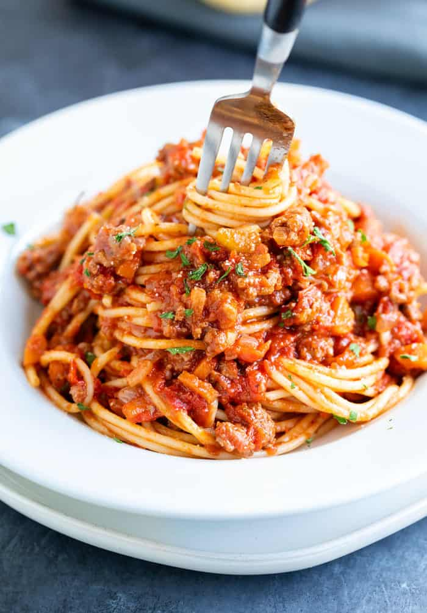

Bolognese
Home

Ingredients
- 1 tablespoon olive oil
- 1 onion, chopped
- 1 clove garlic, crushed
- 1 pound ground beef
- 1 (14.5 ounce) can crushed tomatoes
- 1 (8 ounce) can tomato sauce
- 1/4 cup red wine
- 1 teaspoon dried basil
- 1 teaspoon dried oregano
- 1/2 teaspoon salt
- 1/4 teaspoon ground black pepper
- 1/4 cup grated Parmesan cheese
- 1/4 cup chopped fresh parsley
- 1 (16 ounce) package spaghetti
Steps
- Heat olive oil in a large skillet over medium heat.
- Cook onion in oil until translucent. Stir in garlic, and cook for 1 minute.
- Add ground beef, and cook until brown.
- Stir in crushed tomatoes, tomato sauce, and wine.
- Season with basil, oregano, salt, and pepper.
- Simmer spaghetti sauce for 1 hour, stirring occasionally.